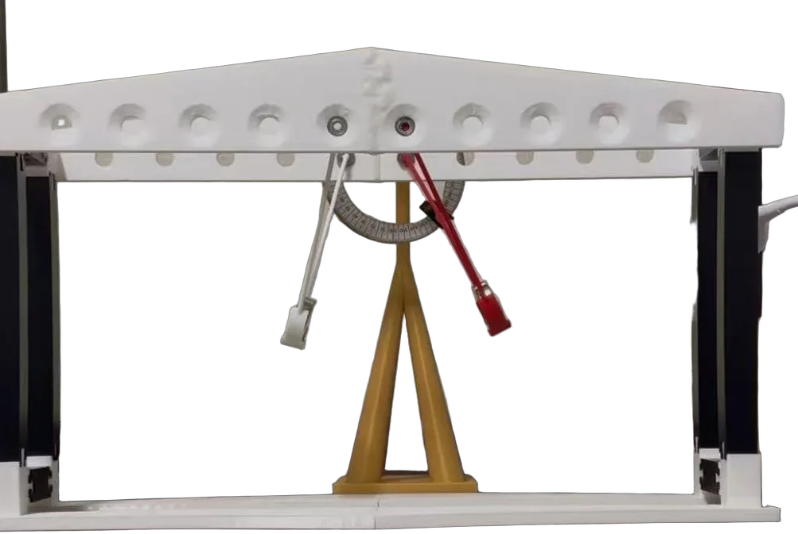
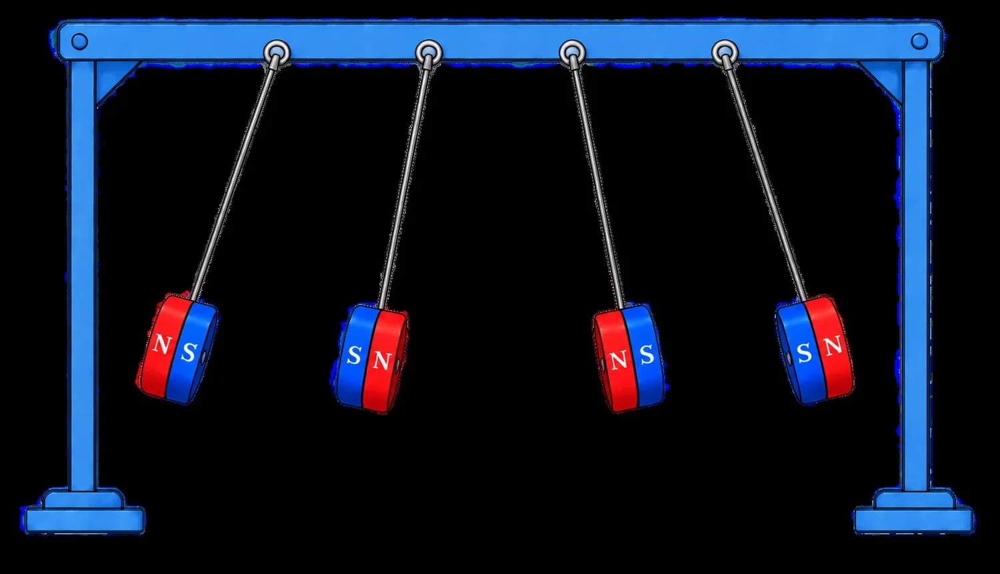
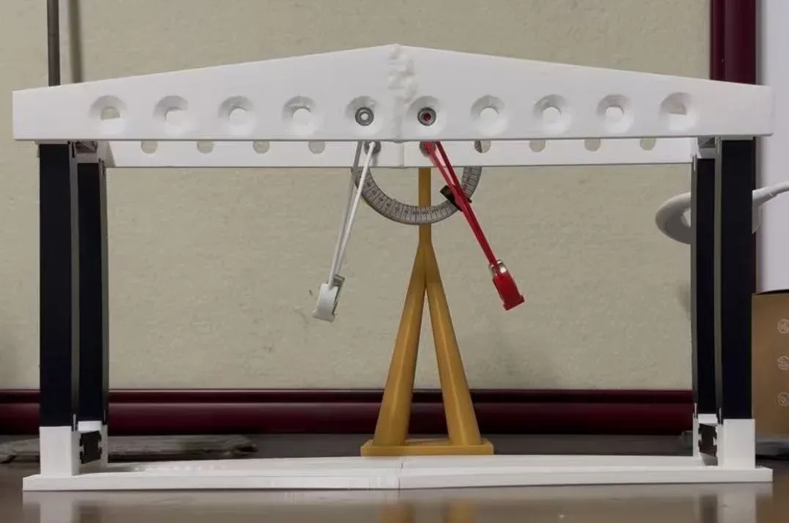
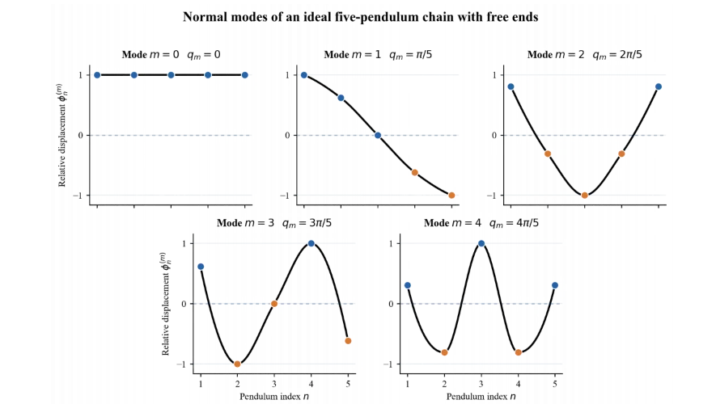
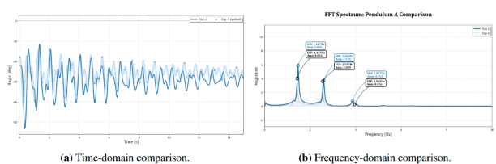

How does energy travel through a chain of magnets?

The question
Hang pendulums side by side with magnets at their tips and they stop being independent. Push one and its energy leaks into its neighbours, then returns, then wanders off again. A chain like this is a desktop picture of atoms in a crystal trading energy.
My question: how do magnet strength, spacing, length and release angle shift the chain’s normal-mode frequencies, and how does that decide whether energy spreads through the chain, comes back, or stays trapped in one place?

The method
I designed and 3D-printed the apparatus: a rigid top rail, sliding PETG brackets that set the spacing, bearing-mounted arms and magnets held in baskets.
Every trial was filmed at 30 frames per second and tracked in Tracker. A Fourier transform of each trace gives the eigenfrequencies, which I compared with a Lagrangian model of the chain.

The finding
The model and the rig agree: across all trials the measured normal-mode frequencies differ from the predictions by 1.37% on average. The nearly in-phase mode is set by gravity alone, while the higher modes rise with magnetic moment and fall steeply with spacing. Larger release angles soften every frequency.
A simplified linear model, not my full Lagrangian. Click a pendulum to push it, and watch its energy (bars below) travel down the chain and come back. Stronger coupling, as with closer magnets, moves energy faster.



Beyond
At CYPT 2026 I reported two more problems with the same method: model first, then a rig I built and bought the parts for myself.
Electrical damping. A magnet on a spring oscillates inside a coil wired to a resistor. I predicted that damping peaks near 2,700 turns, falls as 1/R and grows with the square of the magnetic moment. My data followed all three trends.

Levitation control. Pyrolytic graphite floats over a checkerboard of magnets; a laser heats one edge so the force becomes uneven and the sheet should slide. My N52 magnets held the sheet too firmly for a 1.6 W beam, and the model shows what to change next.

As captain I took each problem apart with the team into physics, model and experiment, and we rehearsed the opposition and review rounds together.